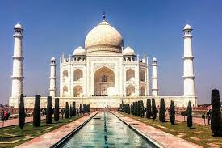

World Wonders

TAJ MAHAL
This mausoleum complex in Agra, India, is regarded as one of the world’s most iconic monuments and is perhaps the finest example of Mughal architecture. It was built by Emperor Shah Jahān (reigned 1628–58) to honor his wife Mumtāz Maḥal (“Chosen One of the Palace”), who died in 1631 giving birth to their 14th child. It took about 22 years and 20,000 workers to construct the complex, which includes an immense garden with a reflecting pool. The mausoleum is made of white marble that features semiprecious stones in geometric and floral patterns. Its majestic central dome is surrounded by four smaller domes. According to some reports, Shah Jahān wished to have his own mausoleum made out of black marble. However, he was deposed by one of his sons before any work began.

THE GREAT WALL
Great might be an understatement. One of the world’s largest building-construction projects, the Great Wall of China is widely thought to be about 5,500 miles (8,850 km) long; a disputed Chinese study, however, claims the length is 13,170 miles (21,200 km). Work began in the 7th century BCE and continued for two millennia. Although called a “wall,” the structure actually features two parallel walls for lengthy stretches. In addition, watchtowers and barracks dot the bulwark. One not-so-great thing about the wall, however, was its effectiveness. Although it was built to prevent invasions and raids, the wall largely failed to provide actual security. Instead, scholars have noted that it served more as “political propaganda.”

COLOSSEUM
The Colosseum in Rome was built in the first century by order of the Emperor Vespasian. A feat of engineering, the amphitheater measures 620 by 513 feet (189 by 156 meters) and features a complex system of vaults. It was capable of holding 50,000 spectators, who watched a variety of events. Perhaps most notable were gladiator fights, though men battling animals was also common. In addition, water was sometimes pumped into the Colosseum for mock naval engagements. However, the belief that Christians were martyred there—namely, by being thrown to lions—is debated. According to some estimates, about 500,000 people died in the Colosseum. Additionally, so many animals were captured and then killed there that certain species reportedly became extinct.

CHRIST THE REDEEMER STATUE
Christ the Redeemer, a colossal statue of Jesus, stands atop Mount Corcovado in Rio de Janeiro. Its origins date to just after World War I, when some Brazilians feared a “tide of godlessness.” They proposed a statue, which was ultimately designed by Heitor da Silva Costa, Carlos Oswald, and Paul Landowski. Construction began in 1926 and was completed five years later. The resulting monument stands 98 feet (30 meters) tall—not including its base, which is about 26 feet (8 meters) high—and its outstretched arms span 92 feet (28 meters). It is the largest Art Deco sculpture in the world. Christ the Redeemer is made of reinforced concrete and is covered in approximately six million tiles. Somewhat disconcertingly, the statue has often been struck by lightning, and in 2014 the tip of Jesus’s right thumb was damaged during a storm.